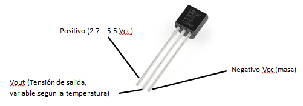
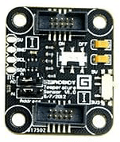
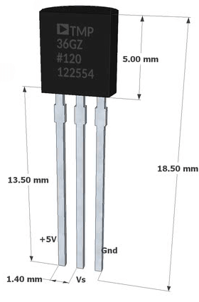
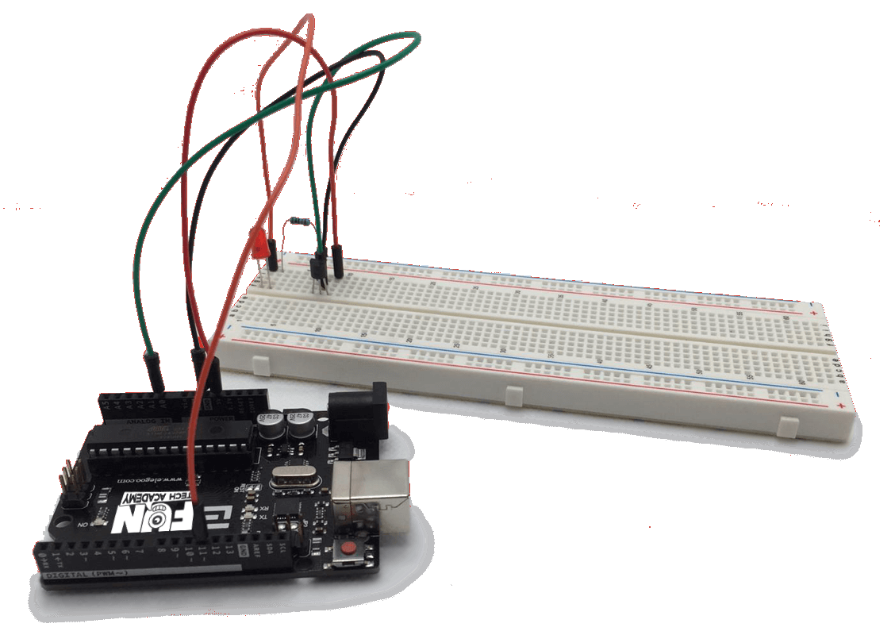
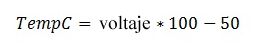
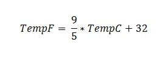
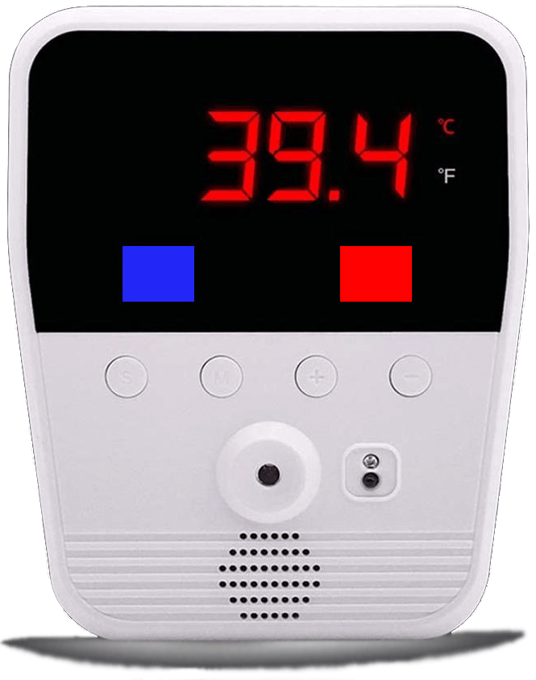

En este tema veremos como funciona un sensor de temperatura, la cantidad de sensores distintos que existen en el mercado y el funcionamiento del sensor TMP36.
(1) x Placa Arduino
(1) x Sensor de Temperatura TMP36
(1) x Resistencia de 100 kOhm
(1) x Protoboard
(-) x M M cables (cables puente de macho a macho)
Un sensor de temperatura es un dispositivo que transforma los cambios de temperatura (magnitud fisíca) en señales eléctricas (voltaje), que luego pueden ser procesadas por equipos eléctricos o electrónicos.

El sensor de temperatura, típicamente suele estar formado por el elemento
sensor, y la cubierta o capsula protectora que lo envuelve.
Entre ambos existe un material de relleno, altamente conductor de la
temperatura, para que los cambios se transmitan rápidamente al
elemento sensor.
Los sensores de temperatura se usan para medir la temperatura del aire o la temperatura
superficial de líquidos y sólidos.
Se usan comúnmente en proyectos de estaciones meteorológicas o en un termostato
doméstico.
No existe un sensor de temperatura universal para cada tipo de aplicación. Más bien, hay
una extensa variedad de métodos y formas desde la cuales podemos medir el calor. Las dos variantes más
amplias son los sensores de temperatura de contacto y sin contacto.
- Los sensores de temperatura de contacto incluyen los termopares y
termistores que hacen contacto con el objeto a medir.
- Los sensores de temperatura sin contacto se encargan de medir la radiación
térmica emitida por una fuente de calor para determinar su temperatura. Este último
grupo mide la temperatura a distancia y a menudo se utilizan en entornos peligrosos.
A continuación, enumenaremos los principales sensores de temperatura del mercado:
El sensor de temperatura por termopar se compone básicamente de dos tiras de metal o dos alambres hechos de metales diferentes y unidos en un extremo.

Los cambios en la temperatura en esa unión termopar inducen un voltaje en los extremos. A medida que la temperatura sube, el voltaje aumenta. Son muy económicos de fabricar y bastante fiables, pero no son muy precisos.
El sensor de temperatura por resistencia se basa en materiales que varían su resistencia eléctrica al cambiar su temperatura.
Existen dos tipos de sensores con estas características, los dispositivos metálicos (RTD - Resistance
Temperature Detector) y los termistores.
En los RTD la resistencia del metal aumenta en forma más o menos lineal con
la temperatura. De esta forma, se pueden considerar termoresistores PTC (Positive
Temperature Coefficient – Coeficiente de Temperatura Positivo).
Por otro lado, los termistores se basan en semiconductores cerámicos. La
resistencia disminuye en forma no lineal con el aumento en la temperatura.
Estos se pueden considerar termoresistores NTC (Negative Temperature
Coefficient – Coeficiente de Temperatura Negativo).
El sensor de temperatura bimetálico es también conocidos como termostato. Son básicamente interruptores que producen una salida del tipo on-off y cambian de un estado al otro cuando se alcanza un determinado valor de temperatura.

Constan generalmente de un bimetal, esto es, una pieza formada por dos
metales con distinto coeficiente de dilatación térmica.
Cuando se calientan, un lado se dilatará más que el otro, y la curvatura resultante se
traduce en un movimiento mecánico, que puede ser usado para medir la temperatura mediante
un indicador o para accionar un interruptor.
Estos sensores no requieren de una fuente de alimentación, y no son tan sensibles como los
termopares o RTD.
Un sensor por dilatación de fluido, es por ejemplo, el termómetro doméstico. Estos usan un líquido (generalmente mercurio) o gas que se contrae o expande con la variación de la temperatura.

Los sensores de dilatación de fluido no requieren energía eléctrica, y son estables. Por otra parte, no generan datos que se puedan registrar o transmitir fácilmente en forma digital.
Un sensor de temperatura por infrarrojos (IR), denominados también pirómetros de radiación, son dispositivos que miden en forma indirecta la temperatura de cuerpos calientes a partir de la radiación térmica emitida en forma natural por los mismos.
Se utilizan en los casos en los cuales resulta imposible o peligroso el uso de sensores por contacto.
El sensor de temperatura monolítico es un dispositivo basado en las propiedades térmicas de las uniones semiconductoras (union PN), particularmente la dependencia de la tensión base emisor (VBE) de los transistores bipolares con la temperatura cuando la corriente de colector es constante.
Generalmente incluyen sus propios circuitos de procesamiento de señales, así como varias funciones de interface especiales con el mundo externo.
A continuación, veremos una lista de los sensores de temperatura más populares para el desarrollo de proyectos y prototipos con la placa Arduino. Estos sensores son excelentes para casi cualquier proyecto, ya que la mayoría de ellos son fáciles de usar y también son muy asequibles.
El sensor de temperatura DHT11 además de leer la temperatura, también lee la humedad.
Es una buena opción por su bajo costo. Su único inconveniente es que solo puede leer la
señal digital una vez cada 1 segundo.
Características:
- Rango de voltaje desde 3 V a 5 V
- Rango de medición de temperatura desde 0°C a 50 °C
- Precisión de medición de temperatura de ±2.0 °C
- Resolución Temperatura: de 0.1°C
- Rango de medición de humedad desde 20% a 90% RH
- Precisión de medición de humedad de 4% RH
- Resolución humedad de 1% RH
- Tiempo de sensado de 1 seg
El sensor de temperatura DHT22 es muy similar en apariencia y funcionalidad al sensor de temperatura DHT11 ya que también mide la temperatura y la humedad.
Es un poco más costoso, pero es más preciso. Su punto negativo es que su velocidad de
lectura es más lenta que el DHT11, solo puede leer la señal digital una vez cada 2 segundos.
Características:
- Rango de voltaje de 3.3V a 6V
- Rango de medición de temperatura de -40°C a 80 °C
- Precisión de medición de temperatura de <±0.5 °C
- Resolución Temperatura de 0.1°C
- Rango de medición de humedad desde 0 a 100% RH
- Precisión de medición de humedad de 2% RH
- Resolución humedad de 0.1%RH
- Tiempo de sensado de 2s
El sensor de temperatura LM75, además de ser igual de practico y preciso que los anteriores, funciona mediante el bus I2C.
La gran ventaja de que sea un sensor completamente digital es su mayor inmunidad al
ruido, ya que toda la electrónica de adquisición y conversión está integrada.
Características:
- Interface de bus I2C para un máximo de 8 dispositivos en el bus
- Rango de voltaje desde 2.8 V a 5.5 V
- Rango de temperatura desde −55°C a +125°C
- ADC interno de 11-bit con resolución de 0.125°C
- Precisión de ±2°C desde −25°C a +100°C, ±3°C desde −55°C a +125°C
- Bajo consumo
El sensor de temperatura TMP100 al igual que el anterior usa el bus I2C, pero con la diferencia de que tiene dos pines de dirección, lo que permite controlar hasta ocho sensores diferentes usando un solo bus I2C.

Es una solución ideal para el caso en que se desee hacer mediciones de temperatura en diferentes
puntos y se desea usar un cableado simple.
Características:
- Interface bus I2C, para un máximo de 8 dispositivos en el bus
- Rango de voltaje desde 2.7V a 5.5V
- Resolución ajustable de 9 a 12 bits
- Precisión de ±2ºC desde –25ºC a +85ºC, ±3ºC desde –55ºC a +125ºC
- Bajo Consumo
El sensor de temperatura DS18B20 tiene como característica que para comunicarse utiliza el protocolo 1-Wire, esto significa que se comunica usando solo un pin.
Cada sensor tiene un número de serie único, lo que permite conectar más de un
DS18B20 en el mismo bus de datos sin interferencia alguna.
Características:
- Interfaz 1-Wire, múltiples sensores pueden compartir el mismo pin
- Rango de voltaje desde 3.0V a 5.5V
- Rango de temperatura de -55 a 125°C
- Resolución ajustable de 9 a 12 bits
- Identificador interno único de 64 bits
- Precisión de ±0.5°C desde -10°C a +85°C
- Tiempo de captura inferior a 750ms
El sensor de temperatura y presión barométrica BMP180 es un dispositivo algo más avanzado. Es un sensor de bus I2C que combina lecturas de presión barométrica y de temperatura.
Con estos dos valores de lectura, y mediante un poco de programación, también permite inferir la
altura. Es un sensor bastante económico y muy usado en proyectos de estaciones
meteorológicas.
Características:
- Interfaz bus I2C
- Rango de voltaje de 3.3V a 5V
- Rango de Presión barométrica desde 300 a 1100 hPa
- Resolución barométrica de 1 Pa
- Precisión barométrica absoluta de 1 hPa
- Resolución de temperatura de 0.1°C
- Precisión Temperatura de 1°C
- Frecuencia de Muestreo de 120Hz
- Consumo de energía ultra bajo
- Completamente calibrado
El sensor de temperatura LM35DZ es un sensor de tipo analógico, y viene directamente calibrado en grados Celsius.
La salida analógica en voltaje es directamente proporcional a la temperatura.
Características:
- Calibrado en grados Celsius
- Bajo consumo
- Factor de lectura lineal 10 mV/°C
- Precisión del 0.5°C
- Rango de lectura de −55°C a +150°C
- Ideal para aplicaciones remotas
- Voltaje de funcionamiento desde 4 V a 30 V
El sensor de temperatura TMP36 es un sensor de tipo analógico, muy similar al sensor de temperatura LM35.

Al igual que el sensor anterior, su salida analógica de voltaje es
proporcional a la temperatura ambiente.
Características:
- Voltaje de funcionamiento de 2.7 V a 5.5 V
- Calibrado directamente en °C
- Factor de escala de 10 mV/°C
- Precisión de ±2°C, linealidad de ±0.5°C
- Stable with large capacitive loads
- Rango de operación de −40°C to +125°C
- Bajo consumo
En este tema vamos a utilizar unos modelos comerciales muy extendidos y fáciles de encontrar por muy poco
dinero: TMP36 o LM35DZ. Vamos a ver como los usamos.
Lo primero, tenéis que buscar la hoja de especificaciones del fabricante (busca TMP36 o LM35DZ data sheet).
Aunque al principio no es fácil acostumbrarse a leer este tipo de documentación (y que encima vienen en
inglés), en último término es a donde hay que ir cuando queráis saber exactamente las características de su
funcionamiento.
El resumen podría ser más o menos así:
- Ambos miden la temperatura en grados centígrados.
- El TMP36 funciona entre -50º C y 125ºC.
- El LM35DZ funciona entre 0º C y 100ºC.
- No son especialmente precisos, ya que tiene ± 1ºC de incertidumbre, pero normalmente nos sobra para
proyectos sencillos y son muy baratos.
- El encapsulado es similar al de un transistor y también tiene tres patas, así que mucho cuidado con
confundirlos. Intentad leer las letras que lleva serigrafiadas (si podéis, porque suelen ser tan pequeñas
que a veces no se leen ni con lupa).
- El pin central es el de señal, pero para saber cuál es GND y 5V, el encapsulado tiene una cara plana
y otra curva. Poniendo la cara plana mirando hacia vosotros con las patas hacia abajo (de modo que podais
leer el modelo), el pin de la izquierda es alimentación 5V y el otro es GND.
Si conectáis la tensión al revés, tendréis tiempo de reaccionar y cambiarla, pero mucho cuidado porque se
calentará más que suficiente para haceros una quemadura dolorosa.
Si veis que está caliente no tratéis de sacarlo con los dedos, simplemente desconectad el Arduino y dadle un
rato para que se enfríe.

Una vez efectuado todo el cableado, descargaremos el script del siguiente enlace y lo cargaremos como hemos aprendido.
En el caso de ejemplo, lo que hace nuestro programa es leer el sensor de temperatura, transformarla a grados
centígrados (o celsius) y escribirla en el monitor de serie cada segundo.
Además, si la temperatura sube de una temperatura máxima (en este caso de 28 ºC) se encenderá el LED.
Recojemos el valor analógico que nos devuelve el sensor de temperatura. Lo que nos devuelve el sensor la
tensión de salida. Según las especificaciones del sensor, nos dice que la salida de tensión será de 10 mV
(mili voltios) por cada grado de temperatura y además sabemos que nuestra placa de Arduino mide en las
puertas analógicas una máximo de 1.024 para 5V (y 0 para 0V), por tanto, para una lectura dada, el valor en
voltios de la medida será:
Si dividimos 5 entre 1024, nos dá como resultado 0,0048828125, que según la fórmula, es lo que tendríamos que multiplicar al dato de salida para obtener el voltaje en voltios.
voltaje = lectura * 0.0048828125;
Como cada voltio equivale a 100ºC ( 1V / 10mv = 100), la temperatura en grados Celsius es resultado de
multiplicar esto por 100.
Pero para que la cosa no sea tan fácil el fabricante del TMP36 nos dice que el 0V no es 0º sino -50º (y así
poder leer valores bajo cero), así que al total hay que restarle 50 (solo para este modelo de sensores).

temperatura = voltaje * 100 -50;
Otra función que nos puede ser de utilidad es la de calcular la temperatura en grados Fahrenheit en base a la temperatura en grados Celsius

Tenemos que hacer un sistema que nos controle la temperatura máxima y mínima de un lugar.
Lo que haremos será controlar la temperatura máxima, que inicialmente será la temperatura medida, y siempre
que la temperatura supere esta temperatura máxima, se encenderá un LED rojo durante un segundo y dicha
temperatura pasará a ser la temperatura máxima.
Al mismo tiempo se controlará también la temperatura mínima, que inicialmente será la temperatura medida, y
siempre que la temperatura sea inferior a esta temperatura mínima, se encenderá un LED azul durante 1
segundo y dicha temperatura pasará a ser la temperatura mínima.
Se mostrará cada segundo la temperatura actual, la máxima y la mínima.
La temperatura actual habrá que mostrarla tanto en ºC y en ºF.
